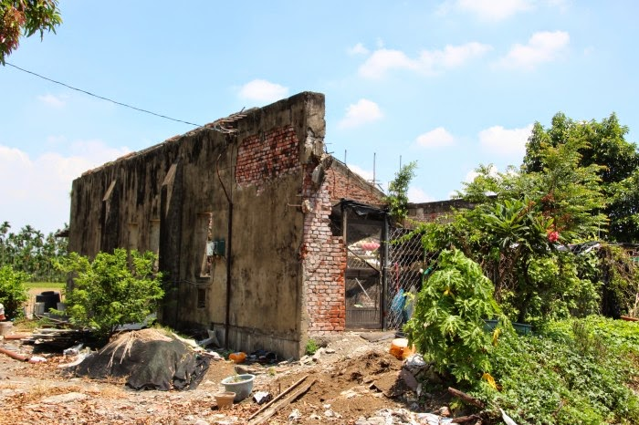

📷 拍攝場景介紹
說明：決定劇情走向的分布地點

圖 3：糖鐵遺址與碉堡體驗區
📖 故事背景與在地真實歷史融合
背景設定：1944 年，日治末期戰雲密布的崁頂。美軍空襲頻繁，東港溪畔戰雲密佈。港東村日軍機槍碉堡附近傳出消息，日軍正準備將原本屬於地方的「糖鐵黃金與歷史文獻」秘密運走。
- 戰爭與搶救寶藏（友情主線）：糖鐵員工、戰地郵差與水利技師組成「保寶同盟」，誓死搶救被封鎖在碉堡與糖鐵車廂裡的土地資產與黃金。
- 禁忌之戀（情感主線）：圍內古厝的撕裂合照背後，藏著陳鄉長一段無法公開的愛情。
- 懸疑民俗與血脈（親情與懸疑線）：力社村平埔族公廨傳來老阿嬤低沉吟唱的古老咒詞，交織出帶著台南奇案風格的懸疑氛圍。
🧭 雙主線架構總覽
格式：雙主線平行推演（A線：血脈/信仰/禁忌之戀；B線：戰爭/寶藏/戰地友情）
玩家數：12 人｜預估時長：3.5 小時
線路 A：血脈、信仰與禁忌之戀
A 線主軸：親情, 愛情, 民俗懸疑
站點：
- 圍內古厝（撕裂合照與鄉長的愛）
- 力社公廨體驗區（老阿嬤咒詞與血脈）
- 麻油與甜點關卡（嗅覺與甜蜜暗號）
線路 B：戰爭、寶藏與戰地友情
B 線主軸：友情, 戰爭, 搶救寶藏
站點：
- 糖鐵遺址（汽笛聲與黃金運送圖）
- 日軍機槍碉堡體驗區（軍事密碼）
- 農場採集區（搶救戰時糧食與資產）
線路 A
陳紹安 (約26歲)
陳鄉長直系後代 / 留洋知識青年
↺ 點擊卡片翻面查看線索與音訊
「若照片能被撕裂，那這片土地埋藏的愛，是否也能被抹去？」
🔍 線索：半張撕裂合照、老宅木盒密碼
❤️ 情感側重：親情身世 × 禁忌之戀 × 家族解密
人物背景：在圍內老宅翻出一張被撕裂的家族合照，照片中父親身旁被剪去了一半，誓要查出背後真相。
隨身道具：半張撕裂的老照片、黃銅古董鑰匙
「手帕上的蓮藕茶香依舊，但有些人，一轉身就是一輩子。」
🔍 線索：刺繡包子圖樣手帕、未寄出情書
❤️ 情感側重：愛情沉浸 × 歷史宿命 × 文物線索
人物背景：帶著祖母留下的手帕與信件來到崁頂，手帕上的圖樣是那段愛而不得的唯一見證。
隨身道具：刺繡手帕、未寄出的封印情書
「阿姆祖的吟唱穿過幾百年，祖靈的血脈從未在我們身上斷絕。」
🔍 線索：阿嬤古老吟唱咒詞、祭祀陶罐圖騰
❤️ 情感側重：親情血脈 × 平埔文化 × 民俗懸疑
人物背景：聽著老阿嬤吟唱的咒詞長大，發現自己的家族血脈與豪門古厝有著不可告人的血緣牽絆。
隨身道具：麻布刺繡符袋、阿姆祖祭祀陶罐
「神桌下的暗號不說謊，天地巡查，因果自有定數。」
🔍 線索：神桌下透光硃砂符咒、廟宇奇案籤詩
❤️ 情感側重：懸疑推理 × 奇案風水 × 符咒破譯
人物背景：發現廟裡神桌下帶有奇案風格的隱密符咒，似乎用來封印關於「被替換的孩子」的秘密。
隨身道具：透光硃砂符咒紙、籤詩解盤
「最香的麻油味，能掩蓋最苦的秘密，也能指引回家的人。」
🔍 線索：古法麻油嗅覺瓶、老宅地下暗道圖
❤️ 情感側重：主僕忠誠 × 機關解密 × 嗅覺體驗
人物背景：熟知鄉長與其心上人相愛的過程，忠心耿耿，用香濃麻油味掩蓋了老宅暗道入口。
隨身道具：麻油嗅覺密碼瓶、古厝暗道圖
「無花果入口微酸後甜，就像當年他們私會時，留下的微甜暗號。」
🔍 線索：無花果甜點陣列座標、私會食譜
❤️ 情感側重：愛情浪漫 × 風土美食 × 陣列解謎
人物背景：製作出的無花果甜點帶著微酸微甜的滋味，甜點的排列方式藏著當年私會暗號。
隨身道具：無花果食譜手冊、甜點暗號盤
「汽笛響起那一刻，我沒有後退，因為我身後是我要保護的兄弟與土地！」
🔍 線索：黃銅火車汽笛聲響、糖鐵列車時刻表
❤️ 情感側重：生死友情 × 陣營抗爭 × 鐵道搶寶
人物背景：聽到汽笛聲響起知道日軍即將運走寶藏，與夥伴結為生死兄弟，誓死攔截列車。
隨身道具：糖鐵火車汽笛、列車運行時刻表
「只要腳步還能動，戰火再大，這封信也一定要送到兄弟手上。」
🔍 線索：機槍碉堡牆面彈孔、軍事密碼電報盤
❤️ 情感側重：戰地情報 × 兄弟信任 × 電報破譯
人物背景：冒著空襲危險在碉堡與聚落間傳遞情報，寧死不洩漏同伴名單。
隨身道具：綠色復古郵包、軍事電報解碼盤
「水流會變，地貌會改，但經緯度記下的承諾，永不褪色。」
🔍 線索：東港溪三角點經緯度、黃銅羅盤
❤️ 情感側重：地理測量 × 空間解密 × 寶藏定位
人物背景：利用測量儀器精確定位日軍藏匿黃金與土地地契的「東港溪水岸暗格」。
隨身道具：黃銅羅盤、三角點測量筆記本
「包紮傷口能治癒肉體，但搶回屬於土地的記憶，才能救活這個時代。」
🔍 線索：血染醫案掩護路線、十字急救木盒
❤️ 情感側重：救死扶傷 × 戰時親情 × 檔案搜查
人物背景：父親曾是戰地醫生，為受傷兄弟掩護治療，留下一份記載寶藏位置的血染醫案。
隨身道具：復古急救箱、血染醫案殘頁
「泥土不會撒謊，只要種下信任，戰火裡也能結出希望的果實。」
🔍 線索：農場藏寶分裝地圖、蔬果籃暗格
❤️ 情感側重：大地體驗 × 實體採集 × 團體協作
人物背景：在戰火下帶領兄弟們深入農場採集蔬果資產，將寶藏分裝藏匿於農產品箱中。
隨身道具：採集竹籃、農場藏寶地圖
「算盤撥的是利益，但這一次，我要撥的是崁頂未來的命脈。」
🔍 線索：黃銅算盤暗號、商會黃金對接印章
❤️ 情感側重：雙重身分 × 陣營調度 × 資源對接
人物背景：表面上配合日方，實際上提供所有資金與物資，支援這群年輕人搶回財富。
隨身道具：黃銅復古算盤、商會黃金對接印章
🎬 四大幕次體驗流程
幕 1：戰雲密布・雙線成團
地點：園區大門／報到處
流程：12人報到換裝 → 領取復古道具包 → 分流 A/B 線
幕 2：交織的秘密（雙線平行實境任務）
地點：古厝老宅區／懸疑公廨區／農產甜點區／戰地碉堡與糖鐵區
線路 A 任務：
- 老宅撕裂的合照（拼湊照片 → 發現禁忌之戀與封印信件）
- 阿嬤的古老咒詞（公廨神桌下透光符咒 → 血脈牽絆）
- 麻油與甜點的暗號（嗅覺辨識 → 地下密道按鈕；甜點排列 → 最後誓言）
線路 B 任務：
- 汽笛響起與黃金地圖（糖鐵車廂佈景 → 運輸清單）
- 碉堡絕密救援（電報機解碼 → 日軍炸毀東港溪水岸計畫）
- 大地糧食搶救（鮮採體驗 → 寶藏分裝竹籃）
幕 3：港東素食閣午宴（情報交換與真相大白）
地點：港東素食閣
劇情轉折：A線私人信件揭露B線寶藏真位置；B線地契成為A線撕裂合照解藥。
幕 4：寶藏重見天日與居民「破壁」結尾
地點：崁頂生態公園（湖畔石台）
終章：合力放置麻油密碼、無花果暗號、黃金地契與鮮採農作物 → 音效轉歡快 → 居民登場遞蓮藕茶與好桔包子 → 破壁回到現實崁頂。
🎞️ 2 小時快取「個人劇情微電影」
- 產出時間：體驗結束 2 小時內
- 格式：9:16 直式
- 風格：電影級調色、復古膠片特效、戰火硝煙與古厝光影
- 個人獨白：有（每人 30–60 秒，記錄角色高光時刻）
- 社群 Hashtag：#崁頂時空圖鑑 #糖鐵搶寶 #撕裂的家族合照
範例獨白：「汽笛響起那一刻，我沒有後退，因為我身後是我要保護的兄弟和土地……」
📊 角色與道具總覽表
資料自動整理自上方 12 張角色卡，可搜尋、依線路篩選，並匯出 JSON / CSV 給道具組或執行人員使用。
沒有符合搜尋條件的角色。
📍 後續規劃項目（尚未實作）
以下為企劃階段構想，目前頁面還沒有這些視圖，先列出以利後續開發排序：
- 場地動線與站點熱區地圖層
- 任務解謎依賴關係節點圖
- 微電影產出進度看板（每人狀態）
- PDF 企劃書一鍵匯出
🍜 崁頂美食地圖：美食也是不可或缺的一環
本次旅程會相遇的在地店家與美味信物
崁頂義興麻油廠
📍 崁頂村｜屏東縣崁頂鄉中正路
百年麻油廠，古法石磨胡麻油，香氣濃郁，是劇中「嗅覺密碼」的靈感來源。
麻油
百年老店
古法石磨
洲子無花果農莊
📍 洲子村｜屏東縣崁頂鄉洲子村
鮮採無花果與甜點，微酸微甜如戰時秘密，是劇中「甜蜜暗號」的關鍵道具。
無花果
甜點
農莊體驗
好桔包子
📍 崁頂村｜屏東縣崁頂鄉崁頂村
老鄉長與心上人私定終身的信物，也是後人尋找歷史真相的鑰匙。
包子
記憶的滋味
劇情信物
蓮藕茶
📍 崁頂村｜崁頂生態公園（終章場景）
終章居民遞給玩家的溫暖茶飲，象徵戰爭陰霾散去，回到現實崁頂的平靜生活。
蓮藕茶
破壁結尾
溫暖滋味
港東素食閣
📍 港東村｜屏東縣崁頂鄉港東村
午宴情報交換地點，精緻在地素食佳餚，讓玩家在味覺中拼湊真相。
素食
午宴
情報交換